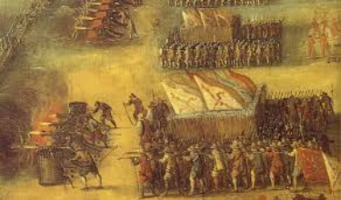
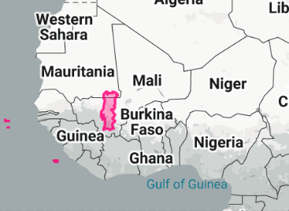
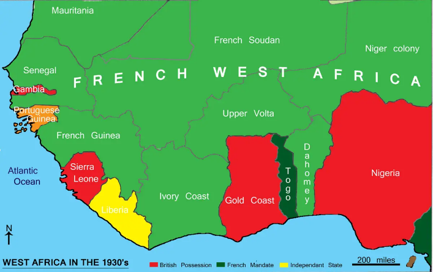

West African Civilization was in a golden age, then four villains ruined everything
1. The Battle of Tondibi (1591) - West African golden age comes to an end
In the 16th Century, the Empire of Morocco (North Africa) was looking for new sources of wealth. Despite the law against Muslims fighting Muslims, Sultan Ahmad I gave the order to invade West Africa.
A Moroccan army (~ 5k) with guns defeated the army of the Songhai (~80k) and eventually destroyed the entire empire.
The Songhai never controlled the region after that and many vassals split off.

2. Who takes advantage of the lack of an empire in West Africa?

Portuguese Empire
With the great West African empires defeated, the region stayed in constant war between small states.
Eventually the Portuguese Empire from Europe was able to get in order to take advantage of trade. Later on the Atlantic Slave Trade totally ruined large parts of the region.
They didn't actually want to rule over West Africa.
They just wanted to control West African trade.
3. Enter - British + French Empires
By the 19th century, the nations of West Africa had become weak enough that the French and the British invaded and divided it between themselves.
Most of West Africa did not become independent again until the 1950s.

4. 17th Century - 20th Century: West Africa under Europe
- Was West Africa always poor and weak?
- Could the West African Golden Age have continued?